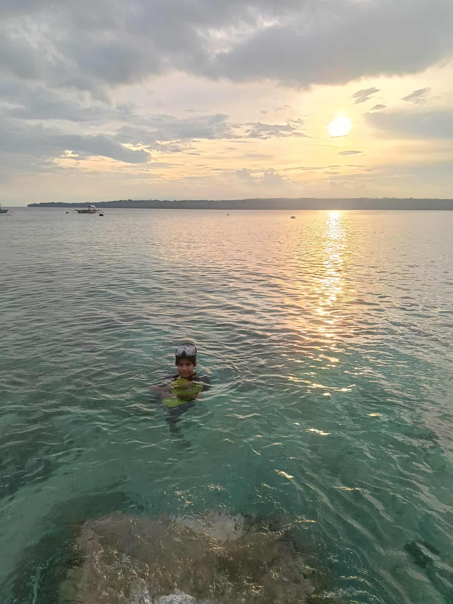

About Us
We are a group of students dedicated to promoting awareness and knowledge about renewable energy.
Our goal is to provide easy-to-understand information on clean energy sources and to inspire people to make sustainable choices.
By sharing simple information and ideas, we hope to inspire more people, especially students like us, to care about the environment and support sustainable energy.
Sharing this knowledge through school projects, community talks, or even social media helps others understand its importance.
Even small efforts can inspire others and make a big difference in building a sustainable future.

I am a PSHS-DRCDC scholar who advocates for sustainable energy and environmental awareness.
While I'm still young, I believe that small actions can lead to big changes when it comes to protecting our planet.
I chose to focus on sustainable energy because I have seen how much pollution and high energy costs affect our communities.
As a scholar, I have a strong desire to learn about and discuss renewable energy.
In my opinion, hydro, wind, and solar energy are crucial to creating a more sustainable and healthy future.
I want to use this initiative to inspire everyone to recognize the importance of renewable energy sources and to take small actions to protect the environment.
Through the creation of this website, this is my way of sharing knowledge and encouraging more people to make eco-friendly decisions.
I hope to raise awareness about the need to shift from non-renewable to renewable energy and to show that we can all contribute in simple ways.